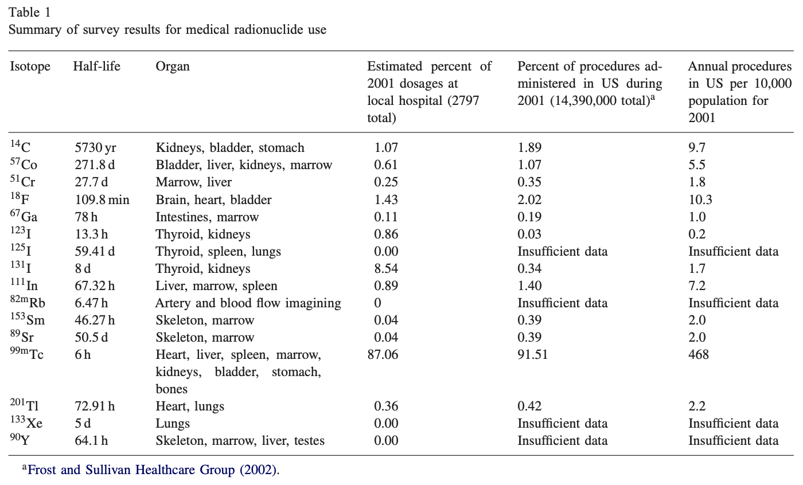
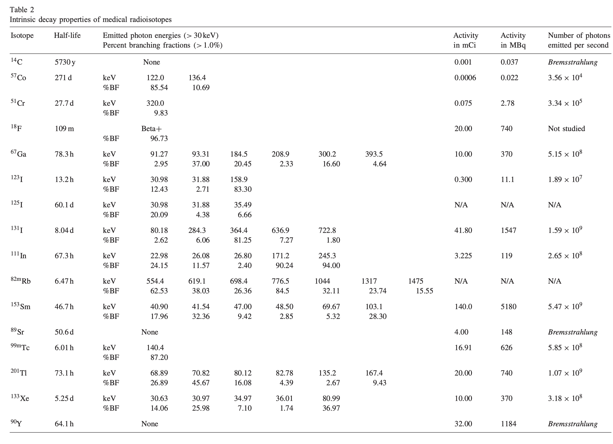

9 Kouzes2006Response
% %
%\[ \DeclarePairedDelimiters{\set}{\{}{\}} \DeclareMathOperator*{\argmax}{argmax} \]
Cite : Kouzes and Siciliano (2006)
9.1 연구 목적
이 논문은 방사선 포털 모니터(RPM)가 의료 방사성핵종(radiopharmaceuticals) 에 어떻게 반응하는지 평가하고, 이들이 국경 검문소에서 발생시키는 nuisance alarm(오경보) 의 규모와 영향력을 정량적으로 분석한다.
핵심 목표:
- 미국 의료 시스템에서 사용되는 의료 핵종의 종류, 사용량, 투여량 조사
- 이 핵종들의 감마 방출 특성을 이용해 MCNP 기반 RPM 응답 시뮬레이션 수행
- 그 결과를 기반으로 국경에서 발생하는 의료 핵종 오경보 비율을 추정
9.2 의료 핵종 사용 현황

- 2001년 미국 내 의료 핵의학 절차: 1,439만 건
- 이 중 약 92%가 진단용, 8%가 치료용
- 사용되는 전체 방사성의약품은 45개 이상이지만, 실제 핵종은 단 17종
- 이 중 RPM이 탐지할 가능성이 높은 방사성 핵종은 9종
가장 중요한 핵종: 99mTc
- 전체 진단 절차의 90% 이상을 차지
- 반감기 6시간, 140 keV 감마 → RPM에서 매우 잘 검출됨
그 외 빈번한 핵종:
- 131I, 67Ga, 61Cr, 201Tl, 111In, 123I, 153Sm
- 대부분 30–250 keV 감마를 방출 → RPM의 Low-energy 영역에서 강한 반응
9.3 3. 핵종별 감마 붕괴 특성

Table 2는 다음 정보를 포함: - 반감기
- 주요 감마 에너지
- branching fraction(%BF)
- 평균 투여량(mCi)
- 초당 방출 감마 개수
핵심 관찰
- 대부분의 의료핵종은 250 keV 이하 감마가 지배적 → RPM의 Low-energy 윈도에서 강한 카운트
- 67Ga, 51Cr, 131I 등 일부는 250 keV 이상 감마도 방출 → High-energy 윈도에서도 신호 발생
- 99mTc의 경우 6시간 반감기이지만 투여량이 매우 크기 때문에 오경보 원인 1위
9.4 RPM 모델링(MCNP) 구성 (p.6–9, Fig. 4–6)
- 실제 국경에서 사용하는 트럭용 포털을 기반으로 모델 구축
- 1개 차선은 4개의 플라스틱 패널(PVT) 검출기, 인접 차선의 검출기도 포함해 총 8개 패널의 response 계산
- 의학 핵종은 사람 몸에서 나오는 것으로 가정 → 높이 1.5 m, 한쪽 패널에 가까운 위치로 모델링
- 두 차선 간 간섭(cross-talk)도 평가
9.5 시뮬레이션 결과
9.5.1 Lane-1 (핵종이 있는 차선) 응답 (p.10–11, Fig. 7)
99mTc 예시:
- 차량이 가까워질수록 bottom/passenger 패널에서 카운트 급증
- 검출기 배치에 따른 비대칭성이 뚜렷함
- Low-energy(5–250 keV)에서 매우 높은 카운트 생성
9.5.2 Lane-2(인접 차선) cross-talk 응답 (p.10–11, Fig. 8)
- Lane-2에서도 상당한 gamma가 검출됨
- passenger-side가 driver-side보다 10배 이상 많이 측정
- High-energy 감마를 방출하는 ⁶⁷Ga, ¹³¹I, ⁵¹Cr에서 cross-talk가 특히 큼
9.5.3 Cross-talk 비율 (p.11)
- Lane-2 / Lane-1 비율은 11–18% 수준
- 즉, 의료핵종을 가진 승객 1명 → 두 차선 모두 오경보 발생 가능
9.6 핵종별 오경보 지속 시간 (p.12, Fig. 9)
핵종별 RPM alarm 지속 가능 기간:
| 핵종 | 오경보 가능 기간 |
|---|---|
| 99mTc | 3.4일 |
| ¹²³I | ~6일 |
| ²⁰¹Tl | ~5일 |
| ⁶⁷Ga | ~8일 |
| ⁵¹Cr | ~10일 |
| ¹³¹I | 115일 이상 (치료용) |
| ¹¹¹In | ~9일 |
| ¹⁵³Sm | ~10일 |
특히 ¹³¹I 등 치료용 핵종은 몇 주 ~ 수개월 동안 RPM에서 알람 가능.
9.7 오경보 발생 확률 (p.12–13)
미국 기준:
- 99mTc 진단 건수: 연 1,316만 건
- 1명당 평균 3일 동안 RPM에서 검출 가능
따라서 오경보 확률:
1/2581명 ≈ 차량 기준 1/1300대
이 값은 실제 국경 데이터(1/500~1/2000 차량)와 일치.
9.8 8. 결론 (p.13–14)
- 의료 방사성핵종은 RPM nuisance alarm의 가장 큰 원인
- 대부분의 핵종은 Lane-1뿐 아니라 Lane-2에서도 cross-talk alarm을 일으킴
- 99mTc는 가장 빈번하며, 131I는 가장 오래 지속
- 의료 핵종 알람은 RPM 운영 부담 증가, 필수적인 2차 검사 증가, 여러 차선의 동시 경보(cross-lane alarm)까지 유발
- 미래 과제: 의료 핵종을 자동 분류할 수 있는 고급 알고리즘 필요
9.9 핵심 요약 문장
“의료 방사성핵종은 미국 국경 RPM에서 발생하는 오경보의 주요 원인이며, 하루 평균 약 1/1300 차량이 의료핵종으로 인해 알람을 발생시킨다.”